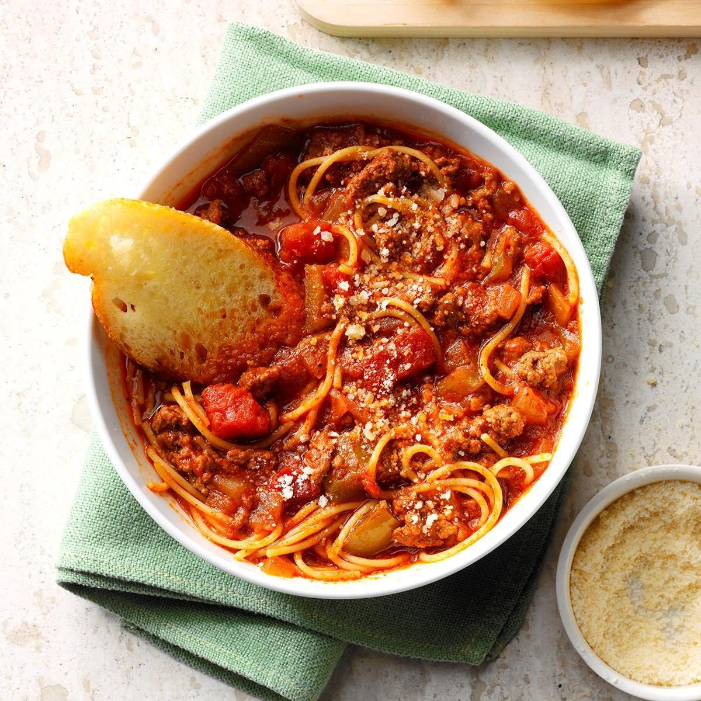

This is one of my favorite recipes because my mom used to make it for me
all the time when I was younger.
I personally love this recipe with extra ground beef, tomato sauce, and
parmesan cheese.
I also love food that is easy to make a doesn't take too long to eat
which makes this meal perfect.
P.S. Garlic bread is also a must have for this dish.
Prep Time: 10 minutes
Cook Time: 20 minutes